Table of Contents
Distributions and Sampling#
# Early imports, to get these out of the way
from scipy import stats
import pandas as pd
import numpy as np
import matplotlib.pyplot as plt
import seaborn as sns
sns.set()
Initial Concepts#
Discrete vs. Continuous Variables and their Distributions#
A fundamental distinction among kinds of distributions is the distinction between discrete and continuous distributions.
A discrete distribution (or variable) takes on countable values, like integers, where every outcome has a positive probability.
A continuous distribution takes on a continuum of values, like real numbers. It assigns probabilities to ranges of values (not any one single value)

Center, Spread and Shape#
You can then start to think about how to describe distributions.
More specifically, the center refers loosely to the middle-values of a distribution, and is measured more precisely by notions like the mean, the median, and the mode.
The spread refers loosely to how far away the more extreme values are from the center, and is measured by some value showing variation - more precisely by the standard deviation, which is effectively a measure of the average distance away from the mean.
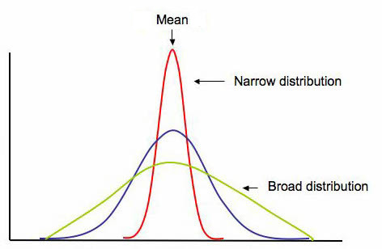
The shape refers loosely how the data shows up when visualized, more specifically capturing details like symmetry or skew, as well as the number of peaks in the distribution.
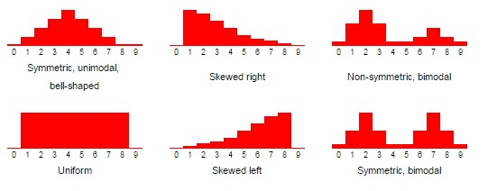
Note that sometimes the center of your distribution is harder to capture precisely, if the shape is skewed:
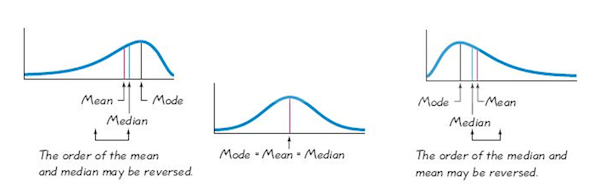
Probability Distribution Functions#
Probability Mass Functions (PMF) / Probability Density Functions (PDF) & Cumulative Density Functions (CDF)#
(I know, “Probability Distribution Functions” and “Probability Density Functions” have the same acronym. PDF normally stands for the latter - the former is a more catch-all term for all three of these)
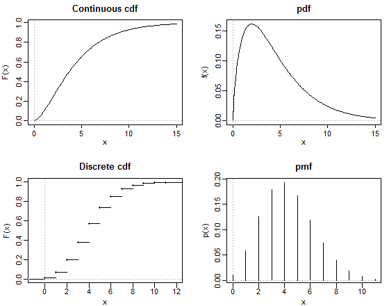
Distribution Types#
Bernoulli Distribution#
The Bernoulli distribution shows the outcome of a single trial where there are only 2 possible options.
The easiest example is a single coin flip of a fair coin.
possible_flips = ['Tails', 'Heads']
possible_flips
['Tails', 'Heads']
# visualize it
plt.figure(figsize=(8,6))
plt.bar(possible_flips, height=(1/2))
plt.ylabel('Probability')
plt.xlabel('Result of Coin Flip')
plt.show()
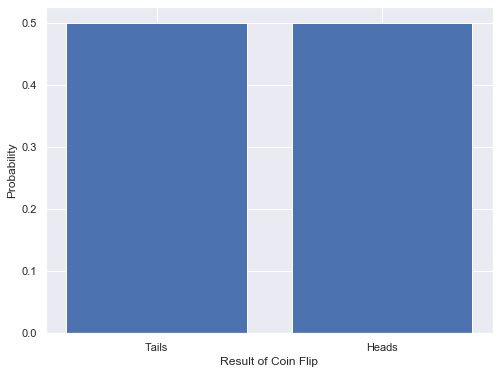
# since it's only 2 things, just creating the dict here
cdf_flip = {'Tails':.5, 'Heads':1}
# visualize it
plt.figure(figsize=(8,6))
plt.bar(cdf_flip.keys(), height=cdf_flip.values(), label='Cumulative Probability')
plt.bar(possible_flips, height=(1/2), label='Binomial Discrete Probability')
plt.ylabel('Probability')
plt.xlabel('Result of Die Roll')
plt.legend()
plt.show()
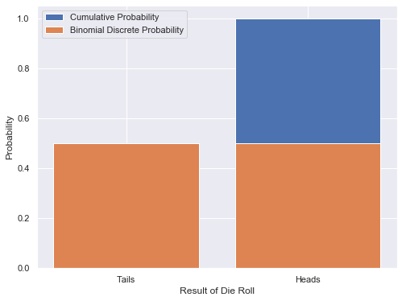
A note - Bernoulli distributions do not need to showcase a fair and balanced trial, as was the case above. Let’s look really quickly at a game where the chance of winning is only 10%:
possible_outcomes = {'Lose':.9, 'Win':.1}
possible_outcomes
{'Lose': 0.9, 'Win': 0.1}
# visualize it
plt.figure(figsize=(8,6))
plt.bar(possible_outcomes.keys(), height=possible_outcomes.values())
plt.ylabel('Probability')
plt.xlabel('Result of Game')
plt.show()
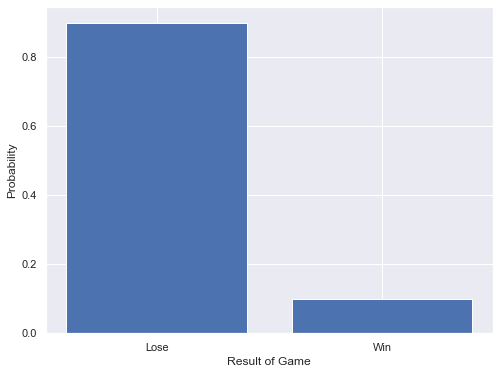
# visualize it
plt.figure(figsize=(8,6))
plt.bar(possible_outcomes.keys(), height=[.9,1], label='Cumulative Probability')
plt.bar(possible_outcomes.keys(), height=possible_outcomes.values(), label='Unbalanced Binomial Discrete Probability')
plt.ylabel('Probability')
plt.xlabel('Result of Unfair Game')
plt.legend(bbox_to_anchor=(1, 1))
plt.show()
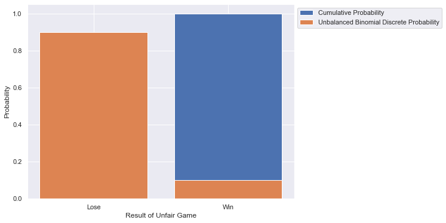
Another note - a Bernoulli distribution is not the same as a Binomial distribution.
Bernoulli shows the probable results of a single trial with only 2 outcomes
Binomial shows the probable summed results of MANY trials with only 2 outcomes
Uniform#
The Uniform distribution applies when all possible values of the variable are equally probable.
If I’m rolling a fair die, then the six possible outcomes are all equally probable. That is, the chance that I roll a 1 is 1 in 6, as is the chance that I roll a 2 etc.
possible_rolls = list(range(1,7))
possible_rolls
[1, 2, 3, 4, 5, 6]
# visualize it
plt.bar(possible_rolls, height=(1/6))
plt.ylabel('Probability')
plt.xlabel('Result of Die Roll')
plt.show()
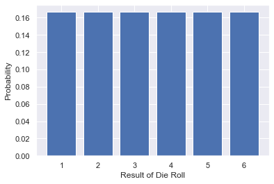
# using dictionary comprehension (!!) to get the CDF
cdf_roll = {roll: (roll/6) for roll in possible_rolls}
cdf_roll
{1: 0.16666666666666666,
2: 0.3333333333333333,
3: 0.5,
4: 0.6666666666666666,
5: 0.8333333333333334,
6: 1.0}
# visualize it
plt.figure(figsize=(8,6))
plt.bar(cdf_roll.keys(), height=cdf_roll.values(), label='Cumulative Probability')
plt.bar(possible_rolls, height=(1/6), label='Uniform Discrete Probability')
plt.ylabel('Probability')
plt.xlabel('Result of Die Roll')
plt.legend()
plt.show()
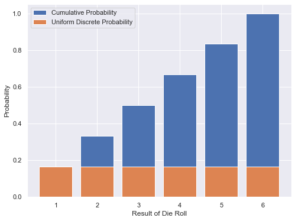
Standard Normal Distribution (Gaussian)#

# Getting our normal distribution PDF,
# as shown in an example in the scipy.stats.norm documentation
x = np.linspace(stats.norm.ppf(0.01),
stats.norm.ppf(0.99), 100)
# visualize it
plt.figure(figsize=(8,6))
plt.plot(x, stats.norm.pdf(x))
plt.ylabel('Probability')
plt.xlabel('Number of Standard Deviations from the Mean')
plt.show()
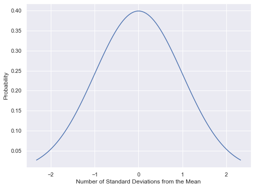
plt.figure(figsize=(8,6))
plt.plot(x, stats.norm.cdf(x), label="Cumulative Density")
plt.plot(x, stats.norm.pdf(x), label="Normal Probability Density")
plt.ylabel('Probability')
plt.xlabel('Number of Standard Deviations from the Mean')
plt.legend()
plt.show()
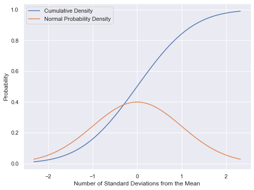
Z-Score#
When working with normal distributions, you can calculate the z-score for a specific point, which is just the number of standard deviations the point is away from the mean:
But that’s not all…#

Sampling & Point Estimates#
The sample statistic is calculated from the sample data and the population parameter is inferred (or estimated) from this sample statistic. Let me say that again: Statistics are calculated, parameters are estimated. - James Jones
Know the differences - Population v Sample Terminology
Characteristics of populations are called parameters
Characteristics of a sample are called statistics

Let’s work through an example to understand this topic better. We grabbed wage and classification information for 11,782 City of Seattle Employees (as of November 2020).
Details: https://data.seattle.gov/City-Business/City-of-Seattle-Wage-Data/2khk-5ukd
# Grab our data
df = pd.read_csv('data/City_of_Seattle_Wage_Data.csv')
df.head()
| Department | Last Name | First Name | Job Title | Hourly Rate | |
|---|---|---|---|---|---|
| 0 | Police Department | Aagard | Lori | Pol Lieut | 80.07 |
| 1 | Police Department | Aakervik | Dag | Pol Ofcr-Detective | 60.84 |
| 2 | Parks & Recreation | Aamot | Allison | Rec Attendant * | 17.35 |
| 3 | Seattle Public Utilities | Aar | Abdimallik | Civil Engrng Spec,Sr | 54.07 |
| 4 | Parks & Recreation | Aban | Eduardo | Civil Engr,Sr | 58.36 |
df.info()
<class 'pandas.core.frame.DataFrame'>
RangeIndex: 11782 entries, 0 to 11781
Data columns (total 5 columns):
Department 11782 non-null object
Last Name 11782 non-null object
First Name 11782 non-null object
Job Title 11782 non-null object
Hourly Rate 11782 non-null float64
dtypes: float64(1), object(4)
memory usage: 460.4+ KB
# Thing to note - the column name 'Hourly Rate ' has a space at the end
df.columns
Index(['Department', 'Last Name', 'First Name', 'Job Title', 'Hourly Rate '], dtype='object')
# renaming columns
col_names = [c.replace(" ", "") for c in df.columns.to_list()]
col_name_map = dict(zip(df.columns.to_list(), col_names))
df = df.rename(columns=col_name_map)
# better
df.columns
Index(['Department', 'LastName', 'FirstName', 'JobTitle', 'HourlyRate'], dtype='object')
What we’ll do is grab a random sample, of 500 employees, and see how the sample statistics match up with our population parameters.
# gonna use the random library to add randomness
import random
# seed for reproducibility (not too random)
random.seed(2020)
# set our parameters
sample_size = 500
total_employees = len(df)
#Pick 500 random employees by index number
random_ints = random.sample(population=range(total_employees),
k=sample_size)
sample = df.iloc[random_ints]
sample.head()
| Department | LastName | FirstName | JobTitle | HourlyRate | |
|---|---|---|---|---|---|
| 10152 | Seattle Center | Studer | Steven | Stage Tech * | 33.680 |
| 10149 | Seattle City Light | Stubbs | Sara | Plng&Dev Spec,Sr | 46.250 |
| 2859 | Information Technology | Dorward | Anthony | Info Technol Prof A,Exempt | 66.110 |
| 10983 | Neighborhoods | Waing | Hla | StratAdvsr3,Exempt | 61.931 |
| 7553 | Office of Housing | Murillo | Daniel | Manager2,Human Svcs | 62.450 |
sample.info()
<class 'pandas.core.frame.DataFrame'>
Int64Index: 500 entries, 10152 to 9320
Data columns (total 5 columns):
Department 500 non-null object
LastName 500 non-null object
FirstName 500 non-null object
JobTitle 500 non-null object
HourlyRate 500 non-null float64
dtypes: float64(1), object(4)
memory usage: 23.4+ KB
#Make a visualization that shows the distribution of hourly rate
plt.figure(figsize=(8,6))
sns.distplot(df['HourlyRate'], label='Full Dataset')
sns.distplot(sample['HourlyRate'], label='Sample')
plt.xlabel("Hourly Rate")
plt.ylabel("Frequency")
plt.title("Distribution of Hourly Rates Amongst Seattle City Employees")
plt.legend()
plt.show()
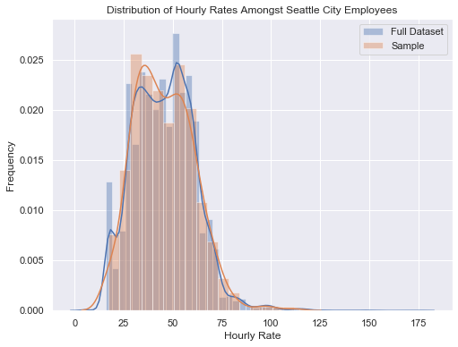
Another comparison:
print("Full Dataset:")
print(df.describe())
print("*" * 20)
print("Sample:")
print(sample.describe())
Full Dataset:
HourlyRate
count 11782.000000
mean 45.730573
std 15.544385
min 5.530000
25% 33.680000
50% 45.540000
75% 56.390000
max 175.450000
********************
Sample:
HourlyRate
count 500.000000
mean 45.554724
std 14.967794
min 17.350000
25% 33.680000
50% 44.465000
75% 55.713000
max 111.724000
So, how’d our sample do?
Additional Resources#
THERE ARE SO MANY.